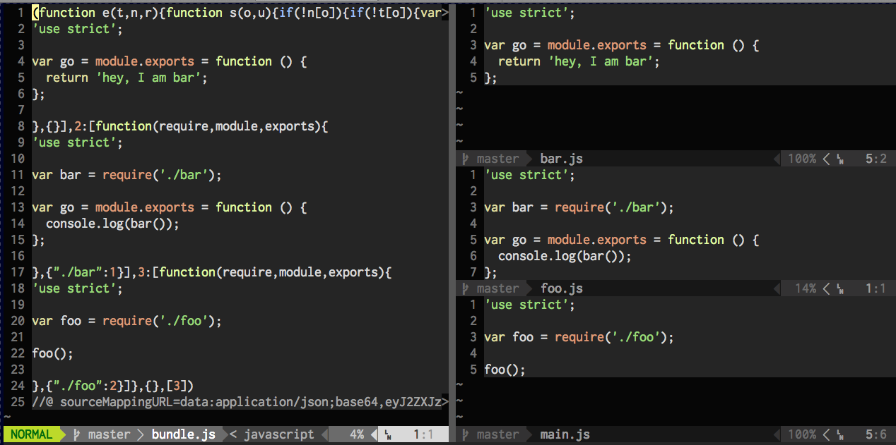
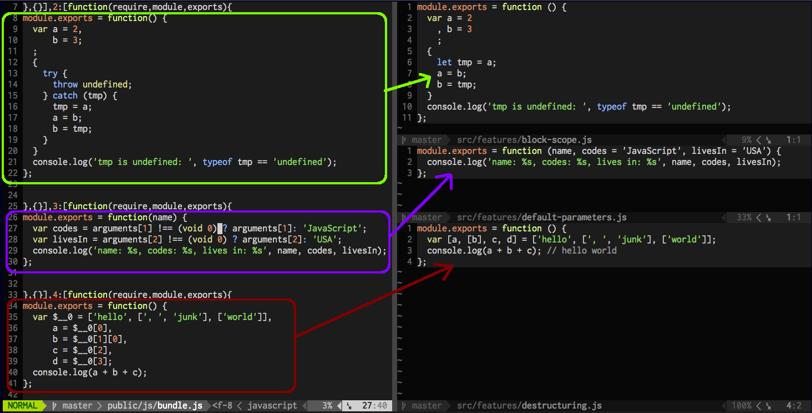
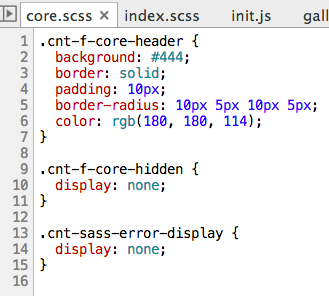
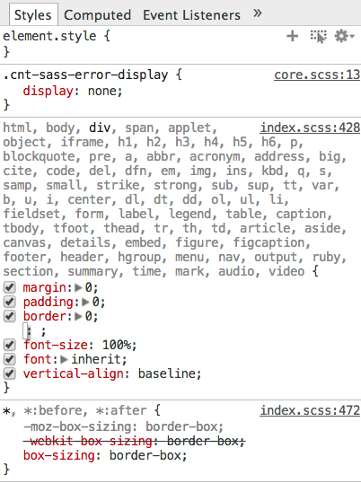
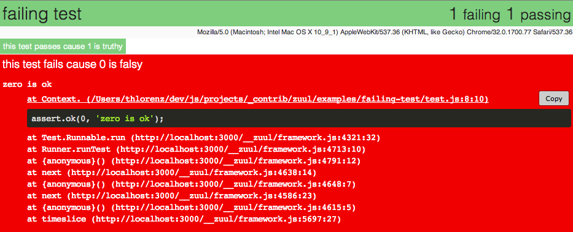

Source Maps
What is a source map?
Maps generated things to the source they were generated from
Apple sauce maps
browserify bundle
browserify bundle

Transpilers
source-map-visualizationES6 bundled
 es6ifySASS bundled


sass-resolve
Stack Mapper

zuul |
stack-mapper